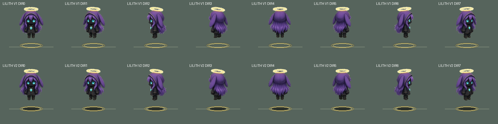
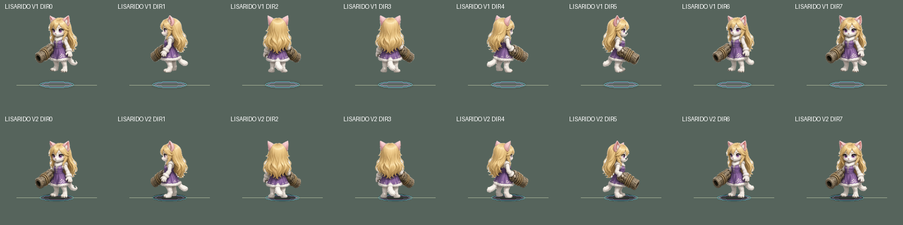
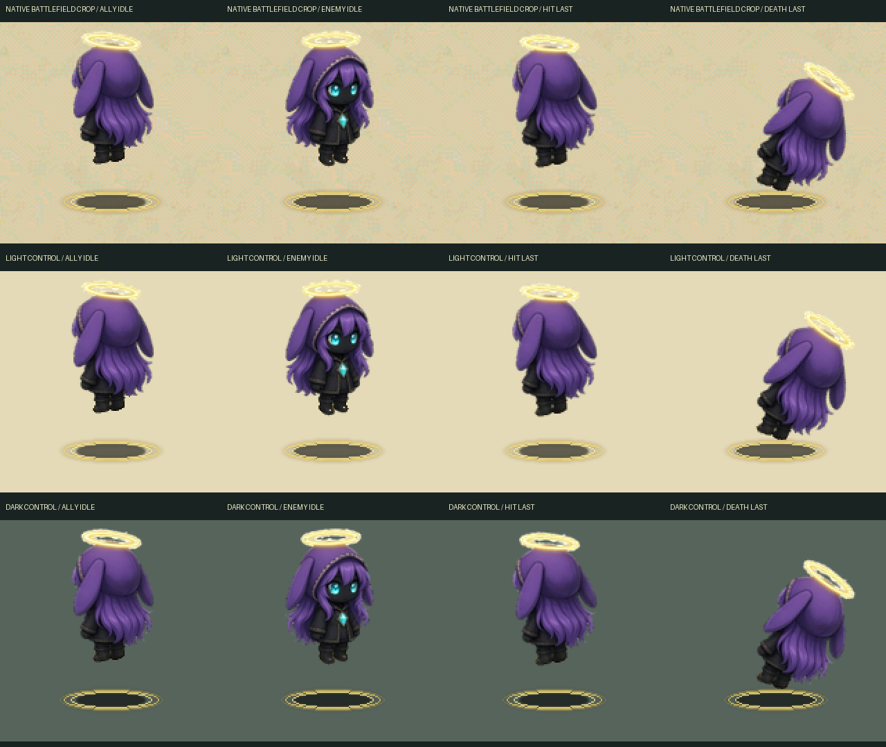
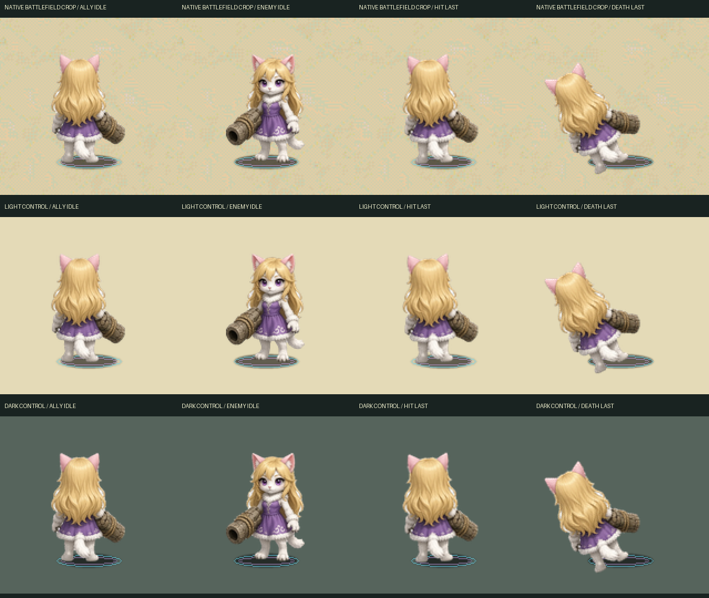
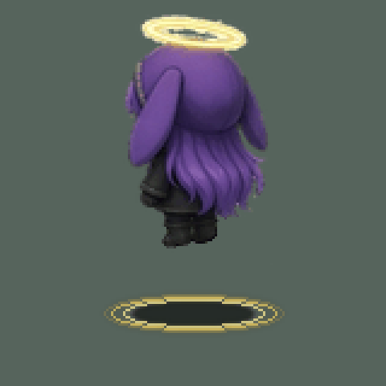
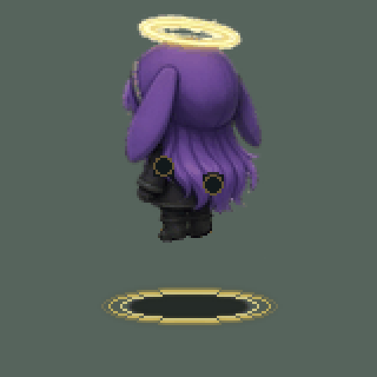
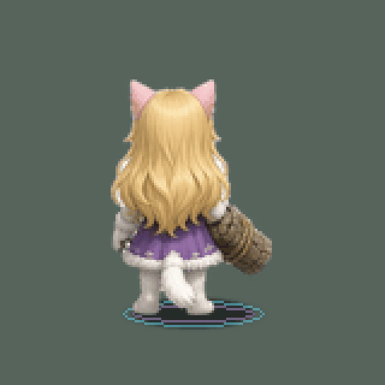

莉莉丝与 Lisarido 的新版贴图补充暗色地影，修正地环随身体旋转和脚底悬空；保留角色设计、原有高度、图号与动作契约。
本页为离线素材合成审阅；浅色地面来自原生战场截图的空白地面裁片。它用于检查投影可见性，不代表新的真实运行截图或实体移动设备认证。
上行为v1，下行为v2。原有漂浮高度保留；独立地影、固定金环与主体变换分离。

上行为v1，下行为v2。主体高度仍为98px，双足落在世界地面；耳朵和炮管继续活动，站立时不再整体上下滑动。

默认己方dir3、敌方dir7以及受击／死亡末帧，分别在原生浅色地面、浅色与深色控制底上放大2倍检查。暗色填充可辨，地影在身体倾斜时仍保持水平。





验收说明 · 完整素材验证 · 本地升级与幂等 · 莉莉丝41项安装测试 · Lisarido 41项安装测试 · 地面行为回归
独立素材报告 · 最终ELF、实战与发行ZIP由主任务报告整合。